01概述与特点
I2C（Inter-Integrated Circuit）是 Philips（现 NXP）提出的两线制串行总线协议，用于芯片内部或板级芯片间的低速通信。对验证工程师来说，它几乎是每个 SoC/显示驱动项目都会遇到的寄存器配置接口。
- 两线制：
SDA（数据线）+SCL（时钟线），加上公共地即可通信。 - 主从结构：master 产生时钟、发起传输；slave 响应地址，被寻址时参与传输。
- 寻址制：每次传输先发一个地址字节（7 位地址 + 读写位），总线上可挂多个 slave。
- 低速中速兼备：100 kbit/s ~ 3.4 Mbit/s（见 03 速率模式）。
- 双向半双工：同一时刻仅一方驱动 SDA。
- 可热插拔/即插即用：设备可随时挂接/摘除（需要处理仲裁）。
典型用途：传感器读取、EEPROM 读写、寄存器配置、DDC（显示数据通道）、调试桥（DBGI2C）等。
源文档：E:\docs\i2c_protocol_guide.md；参考资料：NXP UM10204 Rev.6、Synopsys DW_apb_i2c databook、本项目 i2c_model 与寄存器访问实现。
02物理层与电气特性
2.1 线型：开漏 + 上拉
SDA/SCL均为开漏（open-drain）输出，外部接上拉电阻到 VDD。- 设备只能把线拉低（输出 0）或释放（高阻，由外部上拉拉高）。
- 因此总线电平为"线与"：任何设备拉低，整条线就是低电平。这一点是多主机仲裁和时钟拉伸的基础。
- 电平要求（Fast-mode 以下兼容 3.3V/5V，实际阈值见各器件手册）：
V_IL ≤ 0.3 × VDD，V_IH ≥ 0.7 × VDD；输入需带毛刺滤波器（抑制 <50ns 的尖峰）。
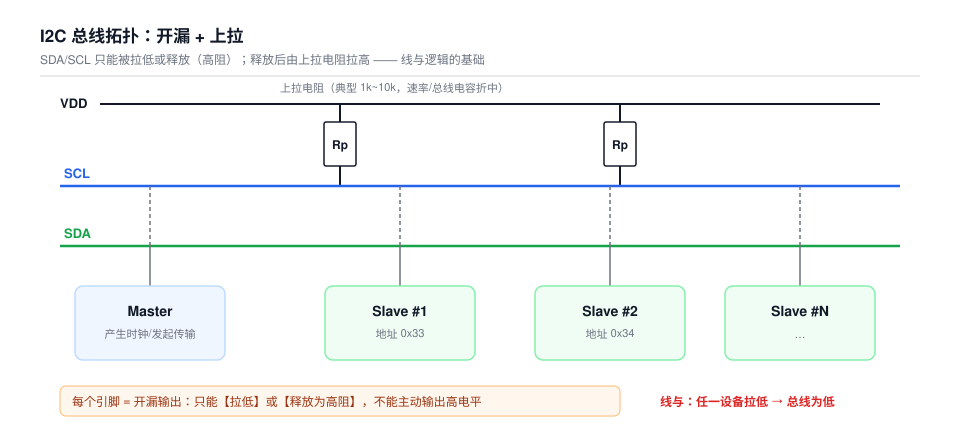
1'bz（三态）建模。本项目 i2c_model.sv 中即用 SDA_OE/SDA_LO 区分"驱动低"与"释放"。03速率模式
| 模式 | 缩写 | 速率 | 备注 |
|---|---|---|---|
| 标准模式 | Sm | 100 kbit/s | 最常见，几乎所有器件支持 |
| 快速模式 | Fm | 400 kbit/s | 需要 4mA 灌电流能力 |
| 快速模式+ | Fm+ | 1 Mbit/s | 需更强驱动，常用于长走线 |
| 高速模式 | Hs | 3.4 Mbit/s | 需 master 先发 Hs 主码 00001XXX 握手 |
| 超快模式 | UFm | 5 Mbit/s | 单向（只写），无 ACK，开漏+推挽混合 |
本项目（DW_apb_i2c 配置）常用 Sm 100 kbit/s / Fm 400 kbit/s，master 与 slave 均支持。
04基本时序信号
I2C 的 4 个核心信号事件（全由 SCL 高电平期间 SDA 的变化定义）：
4.1 START 条件（S）
- 定义：SCL=1 时，SDA 由高→低。
- 作用：开始一次传输，所有 slave 收到后开始监听地址。由 master 产生（单主机时）；多主机时也是仲裁点。
4.2 STOP 条件（P）
- 定义：SCL=1 时，SDA 由低→高。
- 作用：结束一次传输，总线释放。
4.3 数据位有效（SDA 稳定规则）
- SDA 的电平只在 SCL=0 期间允许变化；
- SCL=1 期间 SDA 必须保持稳定（该窗口内的跳变会被解释为 START/STOP，属于协议违规）。
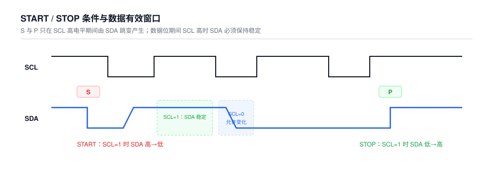
4.4 一字节传输
数据 MSB first，每字节 8 位，之后紧跟 1 个 ACK 时钟位（共 9 个 SCL 周期），详见下一节。
05字节传输与 ACK/NACK
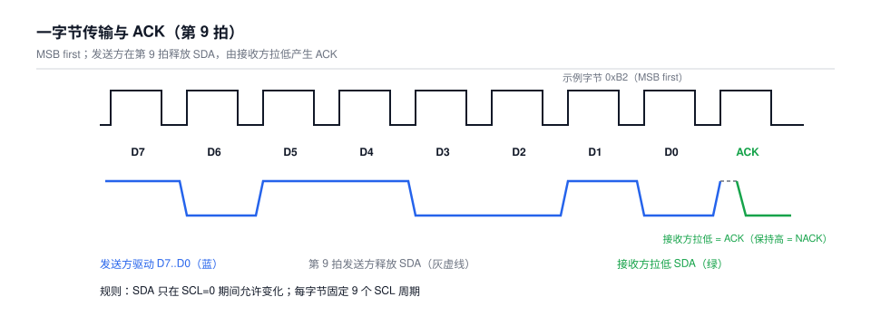
5.1 ACK（应答）
- 发送方（master 或 slave）释放 SDA，由接收方在第 9 个时钟周期将 SDA 拉低。
- 含义：成功接收到字节。master 发送完每个字节后释放 SDA，slave 在第 9 拍拉低 ACK。
5.2 NACK（无应答）
- 接收方在第 9 拍保持 SDA 高。常见场景：
- 读传输的最后字节：master 用 NACK 通知 slave"不用再发了"，随后发 STOP。
- slave 忙 / 地址不存在 / 数据错误：slave 返回 NACK。
- 写传输中 slave NACK 通常意味着错误，master 应停止。
5.3 总线"塞字节/阻塞"
若总线上某一方将 SDA 拉低不放，双方进入死锁，需要 Bus Clear 恢复（见 11 节）。
06寻址方式
6.1 7 位地址
第一个字节（地址字节）= [7 位地址][R/W]：R/W=0 为 master 写，R/W=1 为 master 读。软件里常写成 8 位形式：(addr << 1) | R/W。
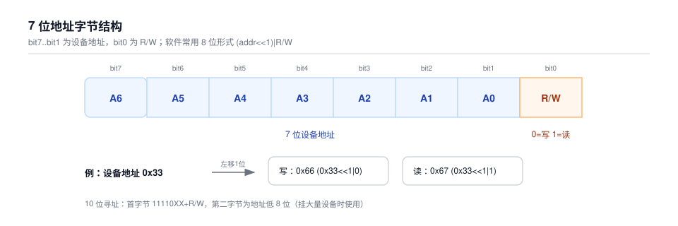
6.2 10 位地址
第一个字节 = 11110XX + R/W（XX 为地址高 2 位），第二个字节 = 地址低 8 位。多用于同一总线挂大量设备。
6.3 保留地址（7 位地址前缀）
| 地址 (7bit) | 用途 |
|---|---|
0000 000 | 广播呼叫（General Call，所有 slave 应答，常用于重启或固件升级握手） |
0000 001 | START byte（同步模式，供无硬件 I2C 的 MCU 用） |
0000 010 | CBUS 地址 |
0000 011 | 保留 |
0000 1XX | Hs 模式主码 |
1111 0XX | 10 位寻址 |
1111 1XX | Device ID（可读器件标识） |
07典型读写流程
以下以"访问从机寄存器"为例（最常见场景：addr 为寄存器地址）。
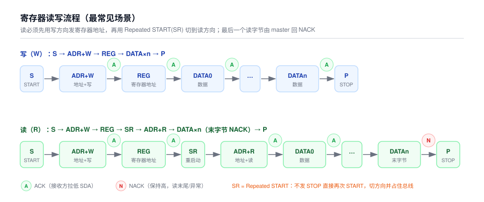
7.1 寄存器写（W）
- START
- 地址字节（7 位地址 + W），slave ACK
- 寄存器地址，slave ACK
- 依次写数据字节，每个 ACK
- STOP
7.2 寄存器读（R）
必须先在写方向发送寄存器地址，再切换方向读：中间用 Repeated START (SR) 切换方向而不发 STOP；最后一个读字节由 master 发 NACK，然后 STOP。
7.3 连续读写（burst / auto-increment）
- 写：一个寄存器地址后连续写多个数据字节，地址自动递增（本项目 HV2M23 I2C-008/009 场景）。
- 读：SR 后连续读多个字节。
7.4 8 位写地址示例（本项目 i2c_model 风格）
i2c_write(dev_addr, sub_addr, data):
start
write_byte(dev_addr << 1) // 8 位写地址
expect_ack
write_byte(sub_addr) // 寄存器地址
expect_ack
write_byte(data)
expect_ack
stop08Repeated START
- 定义：在一次传输中，不发 STOP 的情况下再次产生 START 条件（SR）。
- 用途：
- 读操作中切换方向（写→读）。
- 保持总线占用，避免其他 master 插入（多主机场景下等同于"锁定总线"）。
- 连续读多个寄存器区间。
SDA_OE 的时序。09时钟拉伸 Clock Stretching
- 定义：slave 通过把 SCL 拉低不放，强制 master 暂停时钟，为自己争取准备时间（处理中断、填充 FIFO、响应慢速存储等）。
- master 检测到 SCL 低且未释放时，必须等待，不得继续传输。
- 可能出现在任何 SCL 高→低后，最常见是 ACK 位之后。
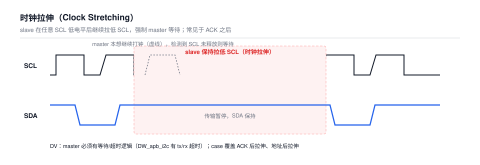
- slave 时钟拉伸的长度需要受控（过长会导致 master 超时）。
- master 侧要有 SCL 被拉低的等待/超时逻辑；DW_apb_i2c 有
tx/rx超时配置。 - 验证 case 应覆盖：ACK 后拉伸、地址字节后拉伸、以及拉伸期间 master 不发数据。
10多主机与总线仲裁
I2C 允许多个 master 共存，通过仲裁决定谁占用总线：
- 仲裁原则（线与）：master 每发送一位就采样 SDA 回读。若自己发出高电平却读到低电平（有别的设备在拉低），说明仲裁失败，立即停止驱动，退出传输。仲裁按位进行，最低地址的 master 最终获胜。
- START/STOP 条件也参与仲裁：如一个 master 发 START，另一个在同一时刻发 STOP，则发 START 的获胜。
- 仲裁不损失数据（"不丢字节"），失败方之后可重试。
- 多主机必须支持总线忙检测：发起传输前若检测到总线忙（START 后未 STOP），应等待。
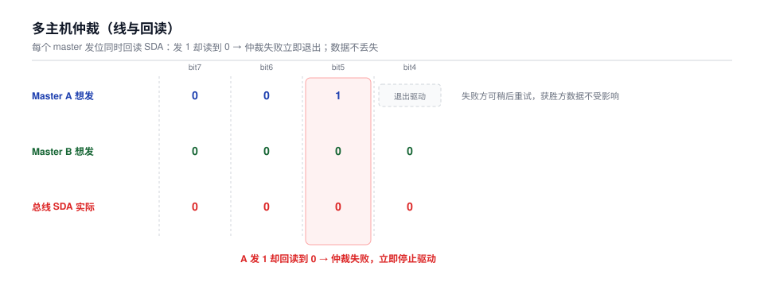
11Bus Clear 与异常恢复
当 slave 因故障把 SDA 一直拉低（例如收到非法地址卡死），总线会被"锁死"，任何 START 都无法发出。
Bus Clear 流程（I2C 规范建议）：
- master 直接发 STOP（若还能控制时钟）。
- master 在 SCL 上产生最多 9 个时钟脉冲，期间不驱动 SDA，让卡住的 slave 在检测到"第 9 个时钟后 SDA 仍未释放"时复位其内部状态并释放 SDA。
- 恢复后 master 可发 STOP 重新初始化总线。
12时序参数速查
NXP UM10204 规定的关键时序（最小建立/保持时间），DV 断言可参考：
| 参数 | 含义 | Sm (100k) | Fm (400k) | Fm+ (1M) |
|---|---|---|---|---|
tSU;STA | START 建立时间（STOP→START 间隔） | 4.7 µs | 0.6 µs | 0.26 µs |
tHD;STA | START 保持时间 | 4.0 µs | 0.6 µs | 0.26 µs |
tSU;DAT | 数据建立时间（SCL↑ 前） | 250 ns | 100 ns | 50 ns |
tHD;DAT | 数据保持时间（SCL↓ 后） | 0 ns | 0 ns | 0 ns |
tLOW | SCL 低电平时间 | 4.7 µs | 1.3 µs | 0.5 µs |
tHIGH | SCL 高电平时间 | 4.0 µs | 0.6 µs | 0.26 µs |
tSU;STO | STOP 建立时间 | 4.0 µs | 0.6 µs | 0.26 µs |
tBUF | STOP 后总线空闲时间 | 4.7 µs | 1.3 µs | 0.5 µs |
上述为最小要求值；实际验证常以对应模式的边界值做 SVA 断言或约束随机（corner）。
13验证要点（DV 视角）
综合本项目验证计划（HV2M23 I2C-001 ~ I2C-015）整理：
① 协议基础
- START/STOP 条件检测（SCL 高时 SDA 跳变）。
- SCL 高期间 SDA 不得变化（
tSU;DAT/tHD;DAT断言）。 - 每字节 9 拍（8 数据 + ACK）。
② 寻址与应答
- 7 位地址正确匹配（区分 8 位形式与 7 位形式）。
- ACK/NACK 正确生成与释放时序（读最后字节 NACK）。
- 保留地址、广播呼叫、非法地址不误响应、不挂死。
③ 寄存器访问
- 单字节/连续读写、地址自增、读回一致。
- 复位期间事务、
T_REGLD建立保持、软件复位恢复默认值。
④ 三态与方向控制
SDA_OE/SDA_LO方向控制正确（写驱动低、读释放）。- 释放态为高阻（
1'bz），无多驱动冲突。
⑤ 异常场景
- 时钟拉伸、NACK 后 master 行为、SDA 卡低 Bus Clear。
- 复位竞态、仲裁（多 master）。
14本项目中的 I2C
| 项目/模块 | 说明 |
|---|---|
HV2M23 I2C_CTL | I2C 配置接口，读写内部寄存器；验证计划含 15 条 I2C case 与 SVA checker |
HK1V11 CHPI/I2C | 寄存器配置双接口（CHPI/I2C），generate_i2c_cases.py 自动生成读写/密码/unlock case |
HKSB66 i2c_model.sv | I2C BFM（start/stop 检测、i2c_write/i2c_read、多 ID 支持、ahb32c_* 系列 task） |
| DW_apb_i2c（SH5/AOSHAN） | 标准 master/slave 控制器，Sm/Fm，支持 clock stretch、DMA、BUS CLEAR |
| DBGI2C / DDC | 调试桥与显示数据通道（0xFC 密码握手访问系统总线，见 E:\docs\sh5_subsystem_guide.md） |
典型设备地址（内部实现，供参考）：
- DBGI2C 密码从机 Device ID：
0x33（校验密码）、0x34（密码正确后解锁访问 AHB）、0x32（Config，读写 I2C 内部寄存器）。 - DDC access system bus：base address
0xFC+ 开启密码0x31393639（ASCII "1969"）。
15HK6T62 i2c_model：I2C task 详解
本节对应 E:\projects\HK6T62\i2c_model.sv——一个仿真用的 I2C master BFM（Bus Functional Model），通过 sdao/sclo 两根开漏信号线产生 START/STOP/地址/读写/ACK 时序，供验证环境访问被测芯片的寄存器或 AHB/I2C 桥接接口。内容依据配套说明 i2c_model_explanation.md 整理。
task、#延时（如 #3/#10）和 force，只能在 testbench 仿真环境中使用。15.1 接口与开漏模型
- 接口：
clk（仿真时钟）、sdao/sclo（双向线）、master_ok/master_ack（状态/应答标志）、ddc_32mode（模式输出）。 sdao/sclo声明为tri1，用三态赋值模拟开漏输出——内部信号为 1 时释放总线（Z），为 0 时拉低：
assign #5 sdao = (sdai) ? 1'bz : sdai;
assign #10 sclo = (scli) ? 1'bz : scli;force_PIN_sda用于在特定时序阶段强制控制 SDA；task 结束时必须释放（置 0），否则后续事务会把 SDA 强制在错误状态，表现为总线卡死或始终不 ACK。- 起停检测：SCL 为高时，SDA 高→低产生
start_signal，低→高产生stop_signal。时钟选择：scli = M ? sclk : scl_sync（M为 master 标志）；wait_start用于在总线状态变化后重新初始化时钟计数器。
15.2 基础时序 task（协议原子操作）
| Task | 作用 |
|---|---|
master_start | 产生 START 条件：在 SCL 适当阶段拉低 SDA，并进入 master 模式 |
master_address | 发送 8 位地址字节并读取 slave 返回的 ACK；最低位 0=写、1=读 |
master_wr | MSB first 发送一个字节，第 9 个时钟周期采样 ACK，更新 master_ack |
master_rd | MSB first 采样一个字节；ack=1 回 ACK 继续读，ack=0 回 NACK 表示最后一字节 |
master_acksig | 单独发送 ACK/NACK，供需要手工控制应答的场景使用 |
master_stop | 释放 SDA 产生 STOP 条件，并退出 master 控制状态 |
master_repeat_start | 产生 Repeated START，常用于写入寄存器地址后立即切换到读操作 |
每个 master_wr 内部都会等满 8 个 SCL 数据位 + 1 个 ACK 周期，因此 task 调用顺序就是总线上的字节顺序，不能随意交换；SDA 的改变必须与 SCL 边沿配合，直接把 sdao 当普通寄存器写会破坏模型。
15.3 普通寄存器访问 task
| Task | 作用 |
|---|---|
i2c_unlock | 向设备地址 8'ha4 发送页面解锁序列（依次写 8'h78、8'h98、8'h76） |
i2c_write | 32 位地址 + 32 位数据写：S → 设备 0xA4+W → 前缀 0x50 → 地址 4 字节（低字节先发）→ 数据 4 字节 → P；随后再向 0x70 写 0x01 触发写操作 |
i2c_read | 先写待读地址（含 0x71/0x01 使能与 0x58 锁存），Repeated START 切到读地址 0xA5，连读 4 字节；前 3 字节回 ACK，最后字节回 NACK |
15.4 一次标准写事务时序（i2c_write）
START
device address = 0xA4, write
register/address prefix = 0x50
address[7:0] / [15:8] / [23:16] / [31:24]
data[7:0] / [15:8] / [23:16] / [31:24]
STOP
START
device address = 0xA4, write
command = 0x70
enable = 0x01 // 触发写操作
STOP15.5 一次标准读事务时序（i2c_read）
START → 0xA4 write → 0x50 → address[7:0] ... address[31:24] → STOP
START → 0xA4 write → 0x71 → 0x01 → STOP // 使能
START → 0xA4 write → 0x58 → STOP // 锁存待读数据
START → 0xA5 read
master_rd(1, rdata[7:0]) // ACK
master_rd(1, rdata[15:8]) // ACK
master_rd(1, rdata[23:16]) // ACK
master_rd(0, rdata[31:24]) // NACK = 读取结束
STOP15.6 AHB/I2C 桥接 task
ahbi2c_* 系列把设备 ID 作为参数（master_address({id,1'b0/1'b1}, flag)），同一个 task 可访问不同 AHB/I2C 从设备：
| Task | 地址宽度 | 数据宽度 | 特点 |
|---|---|---|---|
ahbi2c_enable | — | — | 向设备 8'ha6 写 8'h80/8'h03，打开 AHB/I2C 访问路径 |
ahbi2c_unlock | — | 32 bit | 按参数 id 组设备地址，发页面使能 8'h78 后写 32 位解锁数据 |
ahbi2c_rd_pwd_test / ahbi2c_rd_pwd | — | 32 / 8 bit | 写地址阶段 + Repeated START 进入读模式，读取密码/状态 |
ahbi2c_write | 32 bit | 32 bit | 地址和数据均按高字节先发的 4 字节顺序写入 |
ahbi2c_write_8a | 8 bit | 32 bit | 适用于较短地址格式的访问 |
ahbi2c_cfg_read / ahbi2c_cfg_write | 32 bit 参数 | 8 bit 实际 | 配置空间单字节快速读写 |
ahbi2c_burst_write_no_stop | 32 bit | 多个 32 bit | 先发 32 位起始地址，循环连续写，数据项之间不发 STOP |
ahbi2c_burst_read | 32 bit | 多个 32 bit | Repeated START 后用读地址 8'ha9 连续读，最后字节 NACK 结束 |
15.7 字节序与 ACK 规则
- 普通
i2c_*task：32 位地址/数据低字节先上总线（[7:0] → [15:8] → [23:16] → [31:24]）。 ahbi2c_*task：多为高字节先发。两类 task 不能混用字节序假设（读回数据反序首先查这里）。- 连续读：除最后一个字节外回 ACK，最后一字节回 NACK 后接 STOP——连续读结束的标准做法。
15.8 常见问题定位
| 现象 | 排查方向 |
|---|---|
| 一直收不到 ACK | 设备地址最低位（R/W）；slave 是否已退出复位；SDA/SCL 是否被其他 driver 拉低；master_address 后是否真的释放了 SDA |
| 读回数据字节反序 | 检查发送顺序：i2c_* 低字节先发、ahbi2c_* 高字节先发，勿混用 |
| SCL 不再翻转 | 查 wait_start/M/sclk/scl_sync/scli 驱动关系；M 未置位会切到 scl_sync，wait_start 未触发则 clk_cnt 不重新计数 |
| STOP 后 SDA 仍被拉低 | 查 master_stop 中 force_PIN_sda = 0 是否执行、sdai 是否释放为 1；确认 testbench 没有其他过程继续 force SDA |
15.9 建议的最小验证场景
- 单次
i2c_unlock，确认设备返回 ACK。 - 单次
i2c_write后用i2c_read读回同一地址。 - 读写边界地址
0x00000000与0xFFFFFFFF。 ahbi2c_write_8a的 8 位地址访问。ahbi2c_burst_write_no_stop后立即执行ahbi2c_burst_read。- 人为让 slave NACK，确认
DBG_DISPLAY信息与 task 返回状态符合预期。
波形检查至少应观察：START、设备地址、每个字节后的 ACK、Repeated START、最后字节的 NACK、STOP，以及 STOP 后 SDA/SCL 是否回到空闲高电平。
15.10 task 调用关系（源码核对）
全部 scenario task 都由 7 个协议原子 task 组合而成；原子 task 直接驱动/等待信号层。下图按 i2c_model.sv 逐行统计调用关系：
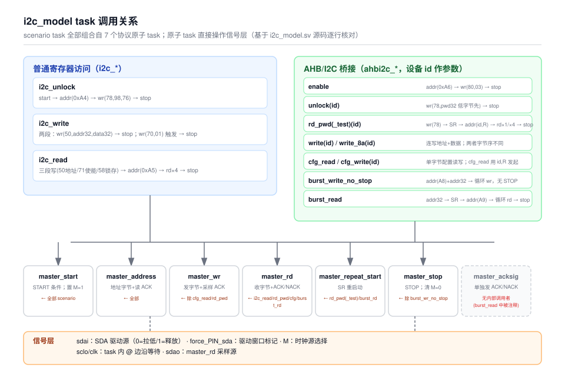
master_start/master_address/master_stop几乎被所有 scenario task 使用；master_stop的唯一例外是ahbi2c_burst_write_no_stop——它故意不发 STOP，配合后续事务（如 burst_read 的 SR）保持总线占用。master_repeat_start只被ahbi2c_rd_pwd(_test)与ahbi2c_burst_read使用；i2c_read用的是"STOP 后再 START"，不是 SR。master_acksig当前无内部调用者（burst_read中的调用被注释掉），是保留的手工应答工具。ahbi2c_cfg_read直接用{id,1'b1}读方向发起，不先发寄存器地址——与其他读流程不同。- 字节序陷阱在源码中确实存在：
ahbi2c_write地址/数据均高字节先发，而ahbi2c_write_8a的数据是低字节先发。
15.11 信号作用与联系（源码核对）
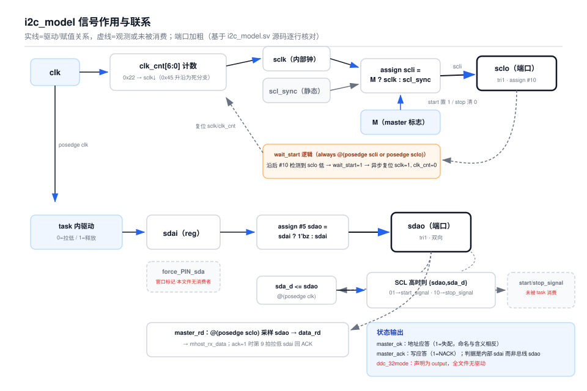
| 信号 | 类型 | 作用与联系 |
|---|---|---|
clk | input | 仿真时钟：驱动 clk_cnt 计数、sda_d 采样，以及所有 task 内的 repeat @(posedge clk) 延时 |
sdao/sclo | inout tri1 | 总线端口；分别由 assign #5/#10 三态赋值模拟开漏（内部源为 1 → 释放 Z，为 0 → 拉低） |
sdai | reg | SDA 驱动源：task 内写 0 拉低、写 1 释放；START/STOP/数据位/ACK 全靠它配合 sclo 边沿变化 |
scli | wire | SCL 驱动源选择：M ? sclk : scl_sync（master 用内部钟，否则用外部同步钟） |
M | reg | master 标志：master_start 置 1，master_stop 清 0 |
sclk/clk_cnt | reg | 内部 SCL 发生器：clk_cnt==0x22 时 sclk 拉低；wait_start 异步复位 sclk=1、clk_cnt=0 |
wait_start | reg | 在 scli/sclo 上升沿后 #10 检测 sclo 仍为低则置 1，用于总线状态变化后重建内部时钟相位 |
scl_sync | reg | slave 模式外部钟输入路径；初始化为 1 后本文件未再驱动（M=0 路径为静态） |
sda_d | reg | sdao 打拍值；与 sdao 组合在 SCL 高时判 START/STOP |
start_signal/stop_signal | reg | 起停检测结果；本文件内未被 task 消费，供波形观测 |
force_PIN_sda | reg | task 内的"正在驱动 SDA"窗口标记；本文件内无 assign 消费，疑由 testbench 层次引用，需对照原工程 |
master_ok | output reg | 地址应答状态：1 = 地址失配（命名与含义相反）；master_address 中赋值 |
master_ack | output reg | 写应答状态：1 = 收到 NACK；master_wr 中赋值 |
mhost_rx_data | reg | master_rd 的读出数据出口（mhost_tx_data 声明后实际未用） |
ddc_32mode | output | 全文件无驱动（声明旁的 //???? 注释也标记了疑问） |
master_address/master_wr的应答判据是内部sdai释放后的值，而非总线sdao——按当前代码路径几乎总是判 ACK OK，slave 真实的 NACK 检测不到。- 时钟生成中
else if(clk_cnt==7'h6f) if(clk_cnt==7'h45)内层条件永假（死分支），sclk上升沿依赖该分支，疑为截图恢复误差，需对照原工程。 scl_sync与ddc_32mode处于未驱动/静态状态；在依赖 slave 模式或 DDC 模式前需确认原始实现。
i2c_model.sv 由 gVim 截图逐段恢复，代码结构与主要时序已整理，但注释、空行、行号和个别调试文本可能与原工程不同；ahbi2c_burst_write_no_stop 的数据表达式含 cnt 偏移，需结合原始 testbench 确认。正式回归前请与工程原始版本逐行 diff。17host_i2c_slave 状态机说明
对应 RTL：E:/projects/HK5B66/HDL/sh5/host/i2c_slave/host_i2c_slave.v；本节依据 E:\md文档\i2c_slave_state_machine.md 整理。
17.1 模块概述
host_i2c_slave 是一个工作在自己 iic_clk 时钟域的 I2C 从机接口，负责：
- 检测 I2C 总线的 Start/Stop 条件；
- 7-bit 设备地址匹配后进入从机响应流程；
- 支持主设备对从机寄存器的写操作与读操作；
- 输出寄存器地址
address、写使能i2cwr、读使能rd等控制信号给上层寄存器文件使用。
| 端口 | 方向 | 说明 |
|---|---|---|
rstn | input | 异步复位，低有效 |
iic_clk | input | 从机工作时钟，用于过采样 SCL/SDA |
devid[6:0] | input | 7-bit 从机设备地址 |
SC | input | I2C SCL 输入 |
SD | input | I2C SDA 输入 |
SDO | output | I2C SDA 输出（开漏，高电平释放总线） |
dout[7:0] | output | 接收到的数据字节（给寄存器文件） |
address[7:0] | output | 当前访问的寄存器地址 |
din[7:0] | input | 读操作时从寄存器文件返回的数据 |
i2cwr | output | 写完成脉冲，表示 dout 有效 |
rd | output | 读采样脉冲，通知寄存器文件把 din 锁存到 reg_dout |
rden | input | 读使能，参与 rd 生成 |
addinc | input | 地址自增量，用于连续访问时自动递增 address |
reg_sta / reg_sto | output | Start/Stop 条件检测输出 |
addr_en | output | 地址有效指示，state == gma_ack 时为高 |
17.2 总线信号采样与 Start/Stop 检测
SCL / SDA 同步与边沿检测
用 2 级移位寄存器对输入 SC / SD 进行过采样：
reg [1:0] SC_DLY;
reg [1:0] SD_DLY;
always@(posedge iic_clk) begin
SC_DLY <= {SC_DLY[0], SC};
if (!(SC_DLY[1] ^ SC_DLY[0]))
scl <= SC_DLY[1];
end
assign scl_posedge = SC_DLY[1] & !SC_DLY[0] & !scl;
assign scl_negedge = !SC_DLY[1] & SC_DLY[0] & scl;- 连续两次采样值相同时，认为总线电平稳定，更新
scl/sda； scl_posedge/scl_negedge为窄脉冲，分别表示 SCL 上升/下降沿；- 数据在
scl_posedge采样，状态机在scl_negedge更新。
Start / Stop 条件
always@(posedge iic_clk or negedge rstn) begin
if (!rstn) reg_sta <= 1'b0;
else if (scl_negedge) reg_sta <= 1'b0;
else if (scl & sda_negedge) reg_sta <= 1'b1; // SCL=1 时 SDA 下降沿 = Start
end
always@(posedge iic_clk or negedge rstn) begin
if (!rstn) reg_sto <= 1'b0;
else if (reg_sta & scl_negedge) reg_sto <= 1'b0;
else if (scl & sda_posedge) reg_sto <= 1'b1; // SCL=1 时 SDA 上升沿 = Stop
endreg_sta检测到 Start 后置 1，在 SCL 下降沿清 0，只保持一个高脉冲窗口；reg_sto检测到 Stop 后置 1；- 状态机内部进一步产生
sta/sto单脉冲，用于在scl_negedge处复位状态机。
17.3 移位寄存器与位计数器
8-bit 移位寄存器 sr
always @(posedge iic_clk or negedge rstn) begin
if (!rstn)
sr <= 8'hff;
else if (scl_posedge)
sr <= #1 {sr[6:0], sda}; // 每个 SCL 上升沿左移，最低位补 SDA
end每个 SCL 上升沿把 SDA 采样进 sr 的最低位，8 个 SCL 周期后 sr[7:0] 即为一个完整字节。
位计数器 bit_cnt
always @(posedge iic_clk or negedge rstn) begin
if (!rstn)
bit_cnt <= 3'b111;
else if (scl_posedge) begin
if (ld)
bit_cnt <= #1 3'b111; // ld=1 时重新加载为 7
else
bit_cnt <= #1 bit_cnt - 3'h1;
end
end
assign acc_done = !(bit_cnt); // bit_cnt=0 时表示 8 位接收完成bit_cnt从 7 递减到 0，完成一个字节传输；ld=1时重新加载为 7，用于开始下一个字节；acc_done=1表示当前字节已经收齐 8 位。
17.4 状态机状态定义
parameter idle = 3'b000; // 空闲 / 等待地址字节
parameter slave_ack = 3'b001; // 地址匹配后发送 ACK，并判断读/写
parameter get_address = 3'b010; // 写流程：接收寄存器地址
parameter gma_ack = 3'b011; // 寄存器地址接收完成，发送 ACK
parameter data = 3'b100; // 传输数据字节
parameter data_ack = 3'b101; // 数据字节完成后发送/接收 ACK
parameter devid_error = 3'b111; // 设备地址不匹配，进入错误态状态机在每个 scl_negedge 更新；任何时候检测到 sta 或 sto 都会回到 idle。
17.5 写操作（Master → Slave）流程
写操作指主设备向从机写入一个或多个寄存器数据，分为三个阶段：
- 地址字节：Start 后接收 7-bit 地址 + R/W=0；
acc_done=1后，下一scl_negedge若my_adr匹配则进入slave_ack并拉低 SDA 发送 ACK，否则进入devid_error。 - 寄存器地址：
slave_ack中ld=1并重载bit_cnt，因rw=0进入get_address；8 个时钟后进入gma_ack，锁存address <= sr并发送 ACK。 - 写数据：
gma_ack中ld=1并进入data；接收 8-bit 数据后回到data_ack，发送 ACK 并自动递增address，可继续接收下一字节（连续写）。
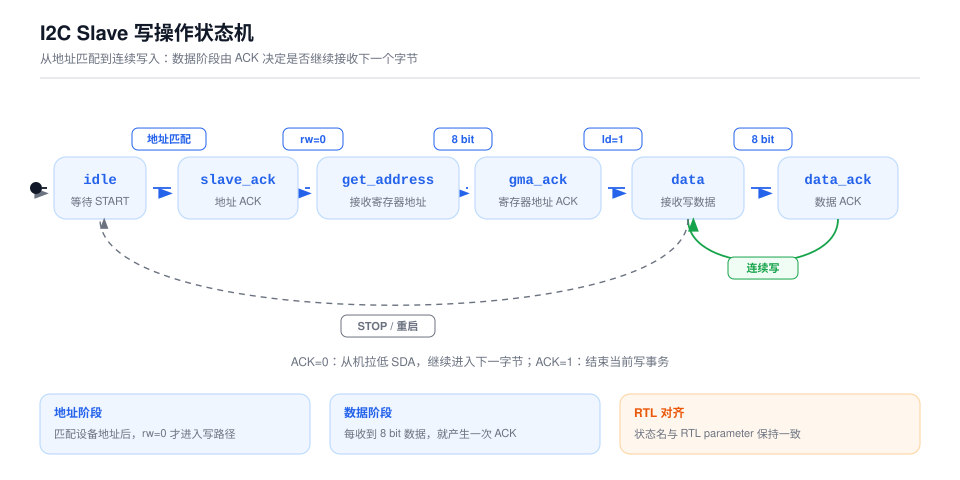
17.6 读操作（Master ← Slave）流程
读操作指主设备从从机读取一个或多个寄存器数据：
- 地址字节 R/W=1，匹配后进入
slave_ack； - RTL 在
slave_ack的rw=1分支只释放 SDA，没有执行state <= data，因此状态实际保持在slave_ack；此时rd仍可能触发din装载。 - 虽然 RTL 定义了
data/data_ack的读数据和 ACK/NACK 逻辑，但从当前读入口没有可达转移；若要实现文档描述的读流程，需要在slave_ack的读分支显式进入data。
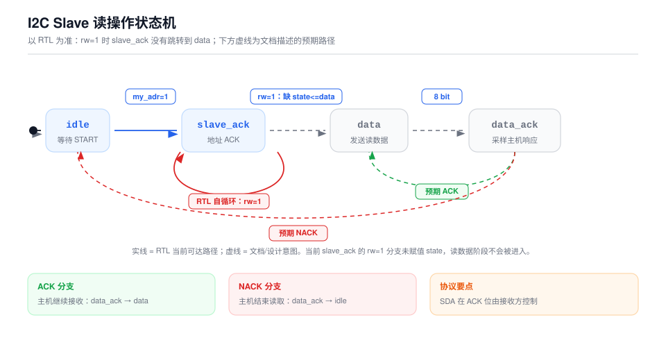
读数据寄存器逻辑
assign rd = rden & (rw & scl & ((state == slave_ack) | (((state == data_ack) & (!sda)))));
always @(posedge iic_clk or negedge rstn) begin
if (!rstn)
reg_dout <= 8'hff;
else if (sto | sta)
reg_dout <= 8'hff;
else if (rd & scl_negedge)
reg_dout <= din; // 从寄存器文件读取数据
else if ((reg_dout != 8'hff) && rw && scl_negedge)
reg_dout <= #1 {reg_dout[6:0], 1'b1}; // 移位，用于主机 ACK 生成
end
assign SDO = sda_o & (reg_dout[7] | !rw);rd在slave_ack阶段或data_ack阶段（且主设备 ACK=0）产生脉冲；- 上层寄存器文件在
rd脉冲时把数据放到din，reg_dout在rd & scl_negedge时锁存； - 正常读输出时
SDO = sda_o & (reg_dout[7] | !rw)；当rw=1时，实际由reg_dout[7]驱动。
17.7 关键信号时序说明
| 信号 | 触发条件 | 含义 |
|---|---|---|
acc_done | bit_cnt == 0 | 当前 8-bit 字节接收完成 |
ld | 状态机控制 | 加载 bit_cnt = 7，开始新字节 |
rw | 地址字节最低位 | 0=写，1=读 |
my_adr | sr[7:1] == devid | 设备地址匹配 |
i2cwr | prewr & !wr | 写数据有效脉冲，持续一个 iic_clk |
rd | rden & rw & scl & (state==slave_ack | (state==data_ack & !sda)) | 读数据采样脉冲 |
addr_en | state == gma_ack | 寄存器地址已准备好 |
17.8 注意事项
- 状态更新边沿：状态机在
scl_negedge更新，数据在scl_posedge采样，是典型的 I2C 从机实现。 - ACK 生成：从机在地址字节、寄存器地址字节、写数据字节后把
sda_o拉低，由SDO输出到总线。 - 地址不匹配：若 7-bit 地址不匹配，
state进入devid_error并锁死，直到下一个 Start/Stop 或复位。 - 连续传输：写操作通过
addinc自动递增address实现连续写；读操作通过主设备 ACK 实现连续读。 - 当前读数据实现：
data阶段中sda_o被强制置 1，实际读数据由reg_dout[7]通过SDO = sda_o & (reg_dout[7] | !rw)驱动，即SDO = reg_dout[7]；后续版本可能需要更完整的移位输出逻辑。
附常见误区对照
| 误区 | 正确理解 |
|---|---|
| 发送完字节 master 必须等 slave ACK | 读方向最后一个字节 master 发 NACK |
| SCL 只能由 master 拉低 | slave 可通过时钟拉伸拉低 SCL 暂停 master |
| 地址字节就是设备地址 | 8 位地址 = 7 位地址左移 1 位 + R/W |
| 释放 SDA 等于输出 1 | 释放是高阻，靠上拉电阻拉高；输出 1 需三态模型 |
| START/STOP 之后 SDA 立即可变 | START/STOP 是 SCL 高时的 SDA 跳变，其余时间 SDA 必须在 SCL 低时变 |
本文档为内部学习/参考资料，不替代官方规范。协议权威定义请以 NXP UM10204 为准。